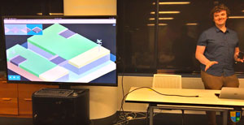
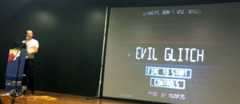
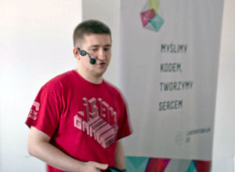
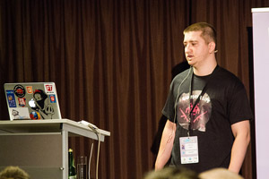

js13kGames Events
This is a list of events related to the js13kGames competition. Please feel free to suggest additions or edits to the list either by sending a pull request on GitHub or emailing them to contact@js13kgames.com.
| Date | Event | Title | Author |
|---|---|---|---|
| 10/10/2016 | BrisJS October 2016 | JS13K | Ash Kyd, Glen Arrowsmith, Kory Nunn |
| 08/10/2016 | JSConf Colombia 2016 | Mi experiencia haciendo un videojuego de 13kilobytes en JavaScript | Giovanny Beltran |
| 07/10/2016 | JSConf Colombia 2016 | Técnicas para reducir código de juegos en JS | Giovanny Beltran |
| 07/09/2015 | BrisJS September 2015 | 2D Canvas Basics and JS13K Game comp | Glen Arrowsmith |
| 28/08/2014 | Meet.js Warsaw #7 | Upchnij grę HTML5 w 13 kilobajtach | Andrzej Mazur |
| 20/09/2012 | onGameStart 2012 | 13 simple steps to create a compo | Andrzej Mazur |
[10/10/2016] BrisJS October 2016
- Title: JS13K
- Author: Ash Kyd, Glen Arrowsmith, Kory Nunn
- City, country: Brisbane, Australia
- Venue: A&G Meeting Spaces
- Type: meetup talk
- Language: English
- Resources: video
- Description: As valiant attempts to attain JS13k glory were had, the guys thought they could show us some of their work for the comp, from others in the comp, and also outside of the comp! They'll be able to give some insights on how making games with JavaScript can be achieved simply, or how it can be tweaked to within an inch of it's life to fit within 13K minified.
[08/10/2016] JSConf Colombia 2016
- Title: Mi experiencia haciendo un videojuego de 13kilobytes en JavaScript
- Author: Giovanny Beltran
- City, country: Medellin, Colombia
- Venue: Diez Hotel
- Type: conference talk
- Language: Spanish
- Resources: slides, interview
- Description: Hacer un videojuego en solo 13 Kilobytes de JavaScript puede parecer imposible, sin embargo existe un concurso anual donde desarrolladores de todo el mundo intentan superar este reto. Como desarrollador de JavaScript y aficionado a los videojuegos participé en este concurso para poner a pruebas mis habilidades y ver hasta donde podía llegar, en esta presentación expondría los diferentes retos a los que me enfrenté y como los fui solucionando.
[07/10/2016] JSConf Colombia 2016
- Title: Técnicas para reducir código de juegos en JS
- Author: Giovanny Beltran
- City, country: Medellin, Colombia
- Venue: Ruta N
- Type: workshop
- Language: Spanish
- Resources: -
- Description: Revisaremos en detalle las diferentes técnicas y estrategias que se pueden usar para reducir código en el desarrollo de juegos hechos con JavaScript, seguiremos el reto de los 13Kilobytes como ejemplo práctico.
[07/09/2015] BrisJS September 2015
- Title: 2D Canvas Basics and JS13K Game comp
- Author: Glen Arrowsmith
- City, country: Brisbane, Australia
- Venue: A&G Meeting Spaces
- Type: meetup talk
- Language: English
- Resources: -
- Description: Glen has offered to teach us the basics of drawing on a 2D canvas with a games focus. No libraries just the raw API. He's also here to let us know about the JS13K game comp.
[28/08/2014] Meet.js Warsaw #7
- Title: Upchnij grę HTML5 w 13 kilobajtach
- Author: Andrzej Mazur
- City, country: Warsaw, Poland
- Venue: Laboratorium EE
- Type: meetup talk
- Language: Polish
- Resources: slides
- Description: Visiting Meet.js Warsaw with the compo talk.
[20/09/2012] onGameStart 2012
- Title: 13 simple steps to create a compo
- Author: Andrzej Mazur
- City, country: Warsaw, Poland
- Venue: Centrum Zielna
- Type: conference talk
- Language: English
- Resources: slides, blog post, video
- Description: First talk ever about the competition, the winners of the first edition were announced at the end of the talk.